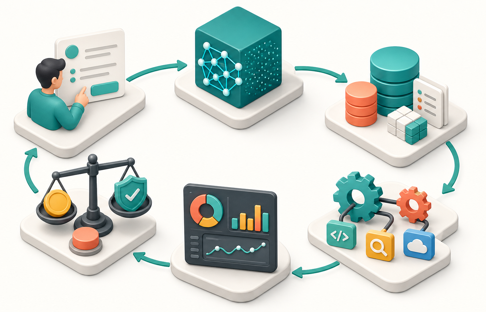

AI 学习目录 / AI 产品经理入门 01
AI 时代的产品经理到底做什么
先学什么：不要从模型名开始
AI 产品的第一性原理不是“哪个模型更强”，而是：用户把一个任务交给系统后，系统能否以可控成本、可评估质量、可接受风险完成它。
从任务开始
先问用户原本想完成什么、卡在哪里、现在用什么办法绕过去。AI 只是改变完成任务的方式，不是凭空创造需求。
从边界开始
模型会错、会漏、会编，AI PM 必须先定义哪些错误能接受、哪些必须拦截、哪些必须交给人。
从指标开始
不要只看“回答像不像”。要看节省时间、转化提升、人工减少、错误率下降、用户是否愿意反复使用。
这里的“系统”包括界面、提示词、检索、工具、权限、人工审核、日志、评估集和商业闭环。
AI PM 定义：多了一层“能力编排”
传统 PM 主要把用户需求翻译成产品流程；AI PM 还要判断模型能力是否足够、上下文是否完整、失败后系统如何收尾。
传统 PM 更像流程设计
- 定义用户路径和功能优先级。
- 推动设计、研发、运营协同。
- 用转化率、留存、成本、满意度验证结果。
AI PM 还要管能力边界
- 判断模型擅长生成、分类、总结、推理还是工具调用。
- 设计输入上下文、RAG、Tool Use 和人类审批。
- 用评估集持续检查效果，而不是只靠主观体验。
做“门店选址助手”时，传统 PM 会设计筛选、地图、报告导出；AI PM 还要判断模型是否能读懂商圈、客流、竞品、租金和 POI 数据，并设计“引用来源”和“低置信度拒答”。
六层工作台：一张图看懂 AI 产品判断
这张图不是装饰图。它对应 AI PM 每次判断需求时都要走完的六层回路：任务、模型、数据、工作流、评估、商业化。

怎么判断：一个需求是否适合 AI
不要用“能不能做”判断，要用“做成后是否稳定创造价值”判断。下面这 4 个问题可以过滤掉很多伪需求。
1. 输入是否足够清楚
如果用户自己都说不清输入，模型不会自动变成产品。先把输入结构化，AI 才有发挥空间。
2. 输出是否能被验收
好的 AI 场景通常有可检查标准，比如答案引用、格式约束、人工通过率、修改次数、任务完成率。
3. 错误是否可控
错一条推荐、错一个摘要、错一次路线规划的代价不同。高风险场景必须加拒答、审批和审计。
4. 价值是否超过成本
模型调用、检索、标注、审核、延迟都会消耗成本。只有节省时间或带来收入，才值得产品化。
缺一个，就先做更小的 MVP，别急着做完整产品。
真实案例：把你的经历迁移到 AI 产品
你之前的出行、本地生活、空间数据经验不是弱项。它们刚好能帮助你判断 AI 应用最容易落地的业务场景。
本地生活：商家运营助手
输入门店画像、订单、评价、活动规则，AI 生成运营建议。关键不是“文案好看”，而是建议能否提升转化、复购或履约效率。
出行：司机调度解释器
AI 把复杂的供需匹配、补贴、热区变化解释给运营或司机。价值在于降低理解成本，不是替代调度算法。
空间数据：位置智能分析
AI 结合地图、POI、人口、交通、竞品，帮助用户提出假设。产品重点是事实引用、地图联动和可追溯分析。
量化研究：研究助理
AI 帮你整理公告、生成因子假设、检查回测风险。关键边界是不能把模型输出当确定性结论，必须留证据和验证路径。
关键词学习：点开看释义和例子
先点熟悉高频词。置灰词代表本节不展开，后续单独学。
AI 产品经理
把用户任务、模型能力、数据上下文、工作流和评估指标连接起来，让 AI 能稳定产生业务价值的人。
做“商家运营助手”时，不只是写 prompt，而是定义输入字段、输出格式、引用来源、人工确认、效果指标和失败兜底。
自测：用 3 分钟检验是否学会
把下面问题写到自己的笔记里。能答出来，说明你已经抓到 AI PM 的基本框架。
问题 1
一个“AI 写周报”功能，用户任务、模型能力、数据、工作流、评估分别是什么？
问题 2
如果 AI 输出错了，哪些错误可接受，哪些必须阻止？你会加什么兜底机制？
问题 3
把一个你熟悉的本地生活或出行场景改造成 AI 产品，它的 MVP 最小范围是什么？
问题 4
你会用什么指标判断这个 AI 功能真的有价值，而不是只是看起来很智能？